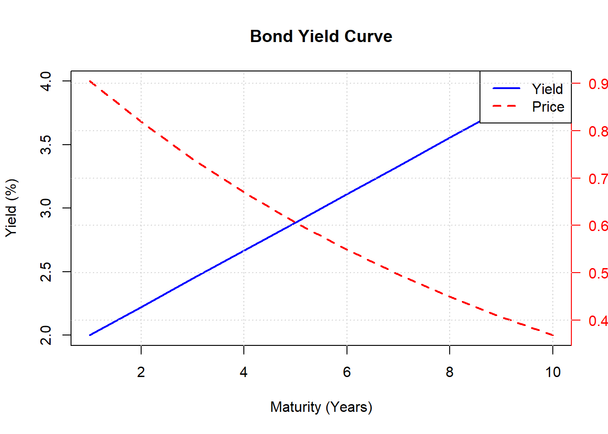
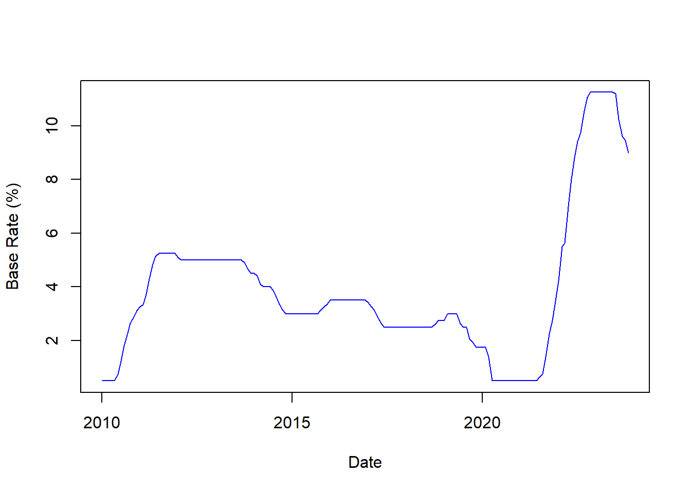

Interest Rates and Bond Performance
The following section was built using information from @pimco.
Interest rates reflect the cost of borrowing money, and they are a critical part of the economic system. In many developed countries there is a base interest rate, which is used as a benchmark rate. Said interest rate is determined by the central banks of the respective countries, and they lower or raise this instrument according to their monetary policy.
The decision of what to do relating the interest rates depends highly on the levels of inflation and growth of the country. Thus, if the levels of inflation and growth are high, interest rates will probably be raised in order to decrement consumption of goods and services. This often prompts retail banks to raise the rates at which they lend, pushing up the cost of borrowing. Banks may also raise their deposit rates, which makes savings more attractive.
On the other hand, if the economy is slowing, the central bank may reduce the base rate. In turn, retail banks may lower their rates making it more attractive to borrow and spend money but less attractive to save it.
Short-Term versus Long-Term Rates
While central banks are responsible for setting a country’s short term rate, they do not control the long term interest rates. Instead, it is the market forces of supply and demand that determine long term bond pricing. In turn, this provides direction for long term interest rates.
For example, if market participants belive a central bank has set interest rates too low, they may worry about a potential increase in inflation. To compensate for this risk, issuers of long dated bonds will tend to offer higher interest rates. This may cause the yield curve, which reflects the relationship between long and short term bonds, to steepen.
Why Interest Rates affect Bonds
Bond prices have an inverse relationship with interest rates. This means that when interest rates go up, bond prices go down and when interest rates go down, bond prices go up. This can be better seen in Equation 1.
\[ \text{Bond price} = \sum^{T}_{i=1}\frac{C_{i}}{(1+r)^{i}} + \frac{P}{(1+r)^{T}}\;. \tag{1}\]
Where \(T\) is the number of periods to maturity, \(C_{i}\) are the interest coupon payments, \(r\) is the discount rate or yield to maturity, and \(P\) is the par value of the bond.
The variation of interest rates is currently known as interest rate risk, which is the risk that the price of a bond will fall when interest rates fall.
Are Rising Rates Always Bad for Bonds?
In the short run, rising interest rates may negatively affect the value of a bond portfolio. However, over the long run, rising interest rates can actually increase a bond portfolio’s overall return. The latter, because of money from maturing bonds can be reinvested into new bonds with higher yields.
Investing Opportunities
Now, the real life application of this goes in the line of investment opportunities in fixed income. In the short run, when the central bank of a country has a base rate that is currently in a high level in comparison to other periods of time, this could possibly mean that if inflation is indicating a downward trend, it is likely that the central entity will reduce the base rate accordingly.
It is important to note that depending on the country, the aggressiveness in which the central banks controls its base rate varies substantially. For example, from the time in which this article is being written1, the Federal Reserve has had a very hawkish stance when it comes to lowering their base rate. On the other hand, the Central Bank of Chile, has been lowering the base rate quite aggressively.
library(readxl)Warning: package 'readxl' was built under R version 4.1.3tpm_data <- read_excel("C:/Users/USER/OneDrive/Escritorio/Git repos/Investments_LA/Reports/Fixed income/Datos/TPM/TPM_DATA.xlsx")
x <- tpm_data$Periodo
y <- tpm_data$`Tasa de política monetaria (TPM) (porcentaje)`
plot(x,y, type = "l", col = "blue", xlab="Date", ylab = "Base Rate (%)")
Footnotes
December of 2023↩︎